Problèmes
Des étapes affichées sans état, un vocabulaire hérité de la base de données, et un parcours non linéaire que l'interface ne savait pas montrer.

Intro
Quand une montre Bell & Ross tombe en panne, elle entre dans un parcours : enregistrement, diagnostic, devis, réparation, contrôle, expédition. Chaque étape passe par un extranet, utilisé par les équipes SAV et un réseau de centres de réparation agréés, de la Suisse à Hong Kong.
L'outil existant faisait le travail, mais ne répondait pas à la question la plus simple : où en est cette montre ?
On m'a confié sa refonte, de l'analyse de l'existant jusqu'au prototype, avec une contrainte de taille : aucune réparation ne suit le même chemin.
Des étapes affichées sans état, un vocabulaire hérité de la base de données, et un parcours non linéaire que l'interface ne savait pas montrer.
Une frise de progression, des mises en attente séparées des étapes, un tableau de bord orienté action et un vocabulaire aligné sur celui de l'atelier.
Maquette validée par le responsable SAV et la coordination internationale, projet découpé en V1 livrable et version cible, et une référence fonctionnelle transmise aux développeurs.
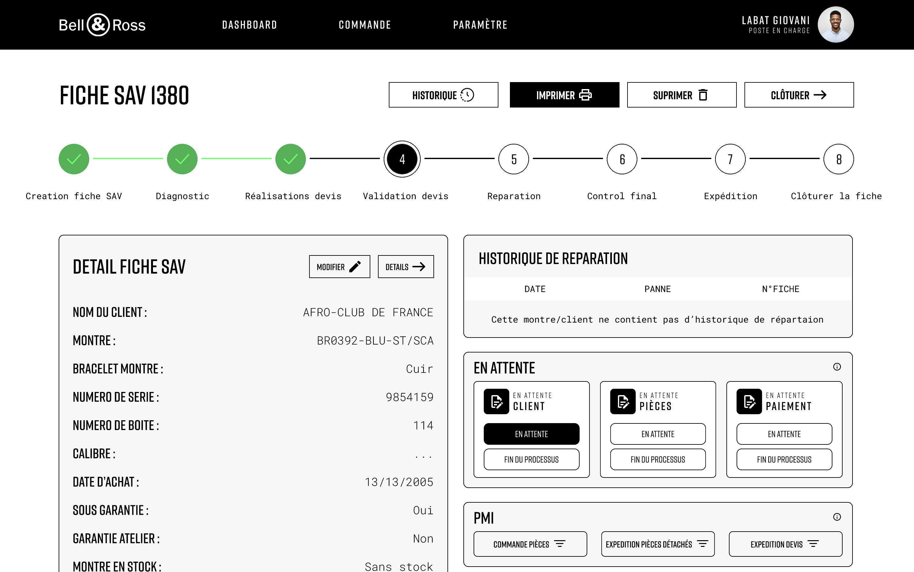
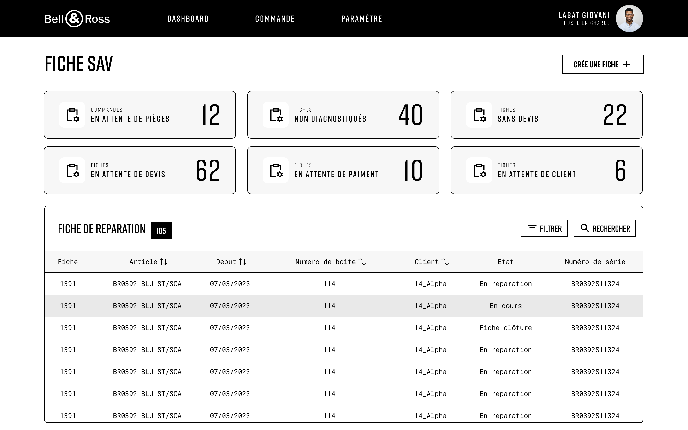


Maquettes de la version cible, conçues dans Figma.
Le contexte
J'ai commencé par une démonstration en direct avec les gestionnaires de la plateforme. Les regarder travailler m'en a plus appris que n'importe quelle documentation.
Sur la fiche d'une réparation, les sept étapes étaient là, sous forme d'icônes. Mais aucune n'indiquait si elle était faite, en cours ou à venir. L'étape en cours ? Un simple texte, perdu entre le numéro de boîte et le code panne.
Pour savoir où en était une montre, il fallait lire toute la fiche.
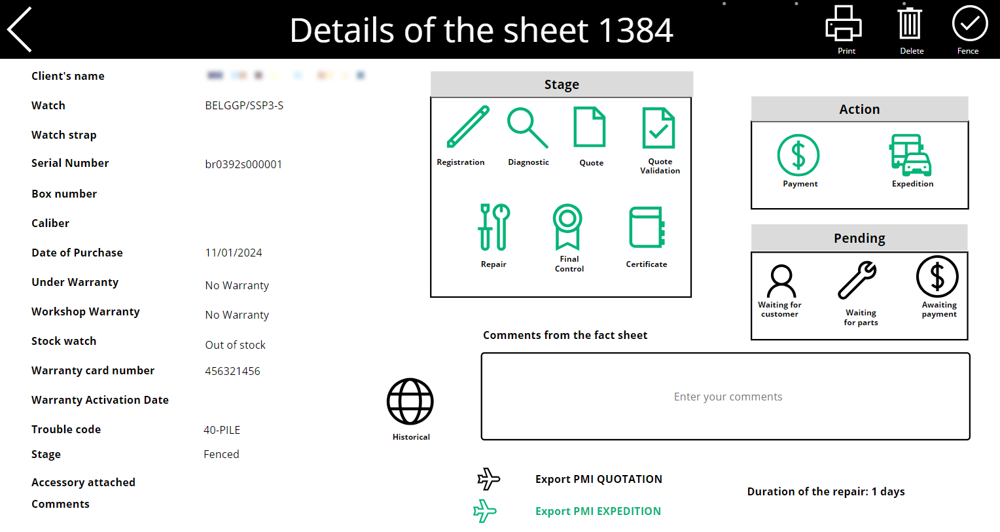
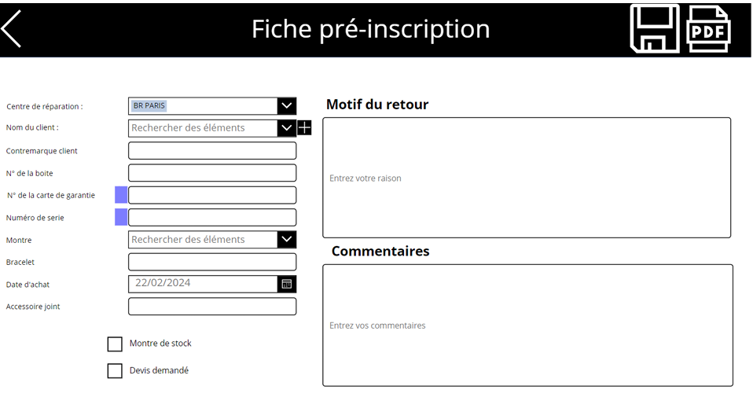
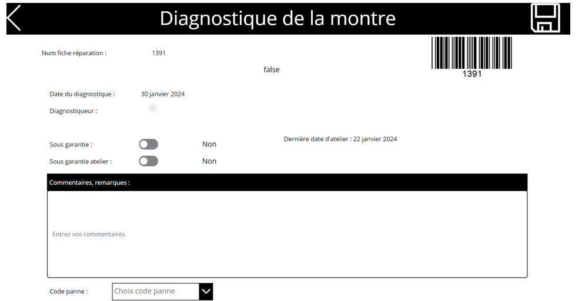
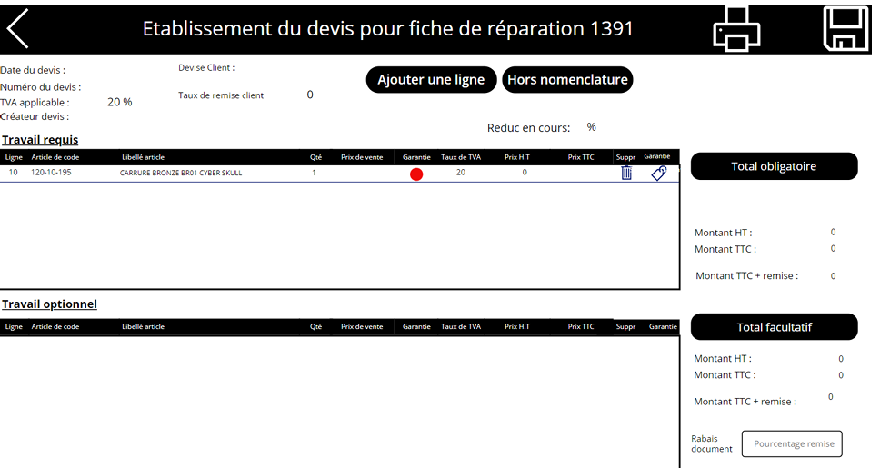
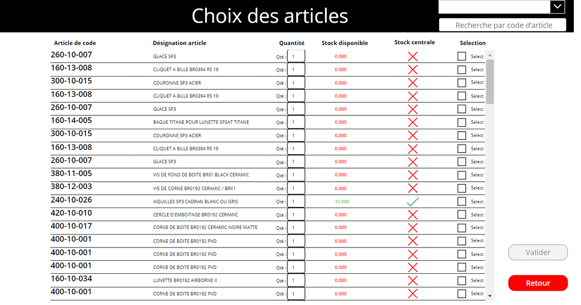
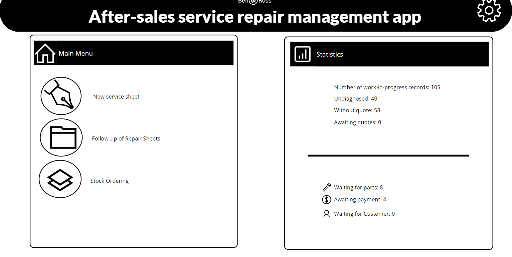
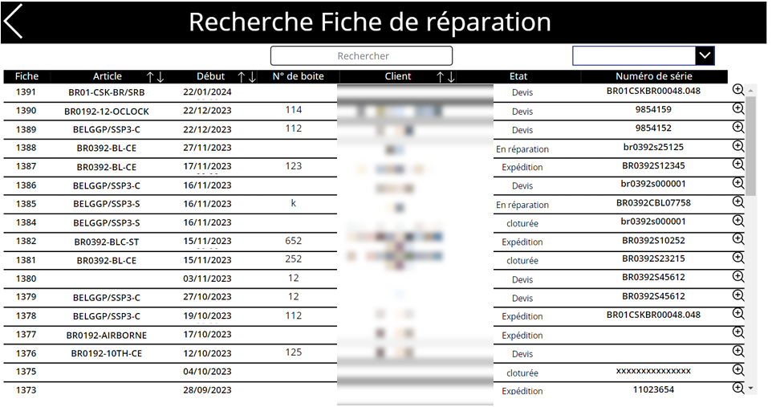
Comprendre l'existant
J'ai ensuite passé chaque écran en revue et rédigé un document de questions ciblées, avec une proposition d'arborescence restructurée. Objectif : repérer les incohérences et comprendre à quoi servait réellement chaque fonction.
Un problème revenait partout : les mots. « Fiche pré-inscription » pour commencer une réparation, « Stock centrale » pour dire ce qui est disponible au siège, « Rabais document » pour une remise. 14 écrans, plus de 70 libellés revus pour correspondre à la façon dont l'atelier parle vraiment.
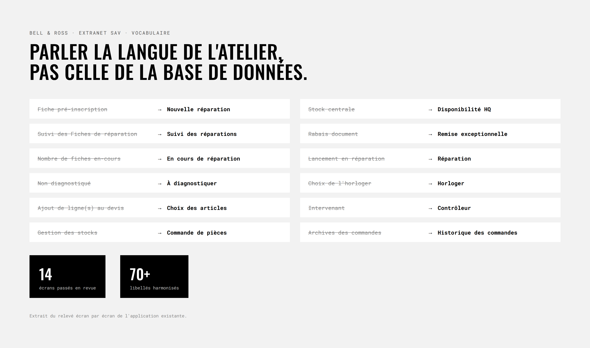
Le défi
Selon la panne, la garantie ou le profil de l'utilisateur, une réparation peut passer par un devis ou non, être contrôlée ou non, être expédiée ou non. Un devis refusé doit rester dans l'historique. Une pièce manquante suspend tout, puis la réparation reprend là où elle s'était arrêtée.
La question est donc devenue :
Comment montrer où en est une réparation quand chaque montre suit un chemin différent ?
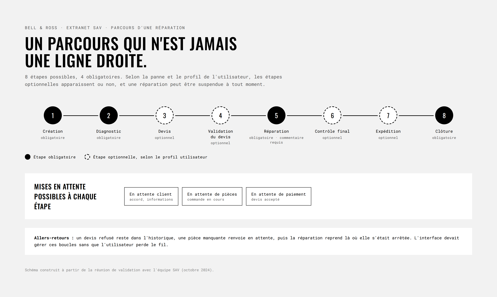
Décision clé
Dans l'ancien outil, « en attente de pièces » était rangé au même niveau que « diagnostic » ou « réparation ». Or ce n'est pas une étape du parcours : c'est un état qui peut suspendre n'importe quelle étape.
J'ai donc séparé les deux :
La fiche répond enfin à la question en une seconde.
APRÈS
Où en est la montre ?
La réponse en une seconde
AVANT
7 étapes en icônes, sans état
L'étape en cours, perdue dans la fiche
Tableau de bord
L'ancien écran d'accueil s'appelait « Statistiques ». J'en ai fait un tableau de bord de travail : six compteurs qui correspondent chacun à une action (à diagnostiquer, sans devis, en attente de pièces…), et juste en dessous, la liste des réparations avec filtres et recherche.
APRÈS
Un tableau de bord de travail
Des chiffres qui disent quoi faire
AVANT
Un écran « Statistiques »
Des chiffres à constater
Commande de pièces
Dans l'existant, la disponibilité des pièces était noyée dans un tableau de 20 colonnes. J'ai conçu une vue en cartes, avec un badge Disponible ou Indisponible visible en premier, des filtres actifs toujours affichés et une liste de commande qui se remplit au fil de l'eau.
Validation
J'ai présenté le prototype au responsable SAV et à la coordinatrice SAV internationale. Leurs retours ont surtout fixé la logique métier :
Découpage
Les développeurs ont bien accueilli la maquette, mais l'ont jugée proche d'une version finale, difficile à livrer rapidement. Avec mon manager et l'équipe SAV, nous avons choisi de découper :
J'ai donc repris le travail pour concevoir cette V1. Mieux vaut un outil plus simple livré demain qu'un outil idéal jamais livré.
Si la V1 était lancée
Le projet était en attente des premiers développements à mon départ : je n'ai donc pas de données d'usage. Pour savoir si la refonte fonctionne, je suivrais :
Combien de secondes pour savoir où en est une montre.
Le nombre de fiches restées sans devis ou sans diagnostic.
Les pièces commandées alors qu'elles étaient hors stock.
Venant des centres de réparation agréés.
Ce que j'en retiens
J'ai d'abord dessiné l'outil idéal. La réunion avec le SAV puis le retour des développeurs m'ont appris à penser en versions : distinguer ce qui change le quotidien tout de suite de ce qui peut attendre. Et à ne jamais oublier qu'un utilisateur métier ne lit pas une interface, il la parcourt entre deux montres.
Projet suivant
Connect Station